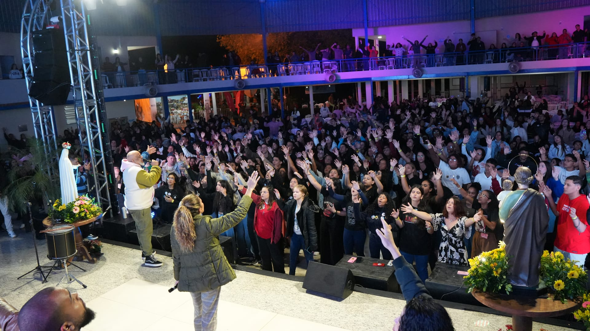
Comunidade de AliançaTrindade Santa
Católicos, trinitários, carismáticos, adoradores e marianos. Desde 2007, em Itaperuna – RJ.
Ou santos ou nada
TrinitáriosCatólicosCarismáticosAdoradoresMarianos
Reconhecida pela Diocese de Campos em 2013, com decreto definitivo em 2018, a comunidade serve no Rio de Janeiro, em Minas Gerais e no Espírito Santo, com missionários até nos Estados Unidos.
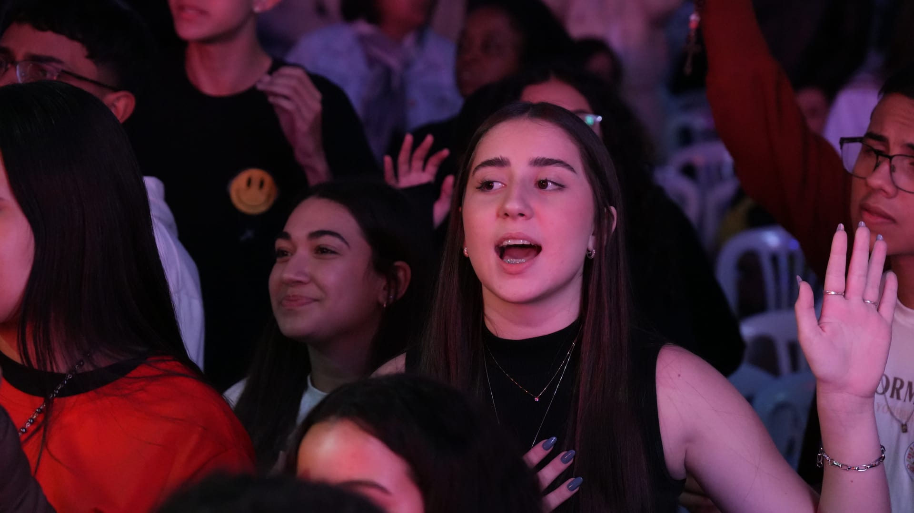
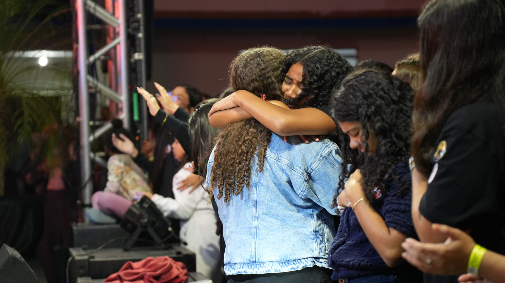
Uma só missão
12 projetos · 10 núcleos · RJ, MG, ES e EUA
Nascer JovemItaperuna
BartimeuMiracema
Casa de DeusCampos
Núcleo MuriaéMG
Filhos de MariaFervedouro
Aviva JovemMacuco
Novas VestesMiradouro
Terço em FamíliaNova Friburgo
Tempo de LiberdadeBom Jesus do Itabapoana

ReconstruçãoEspera Feliz
Núcleo Macaé
Rio das Ostras
Casimiro de Abreu
Santa MônicaItaperuna
Águas ProfundasMadalena
GPP e EscolhidasLaranjal
Núcleo Bom Jesus
New JerseyEUA
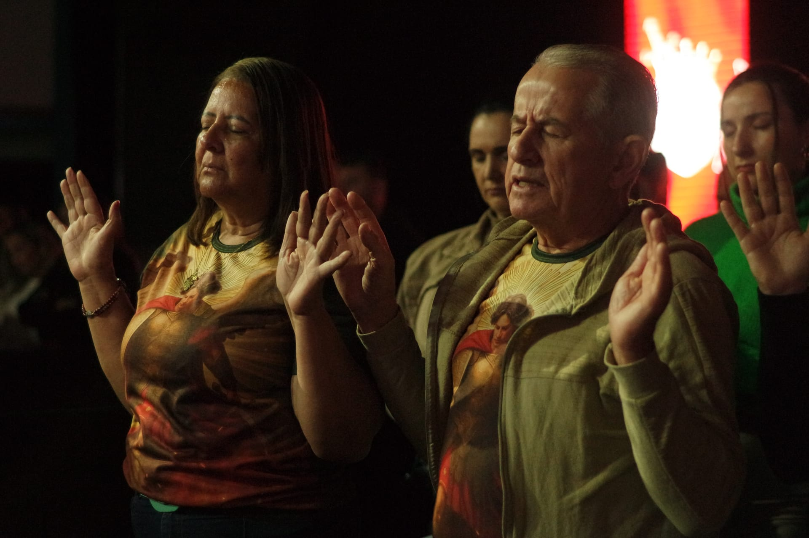
Deus Pai
As mãos que sustentam o mundo.
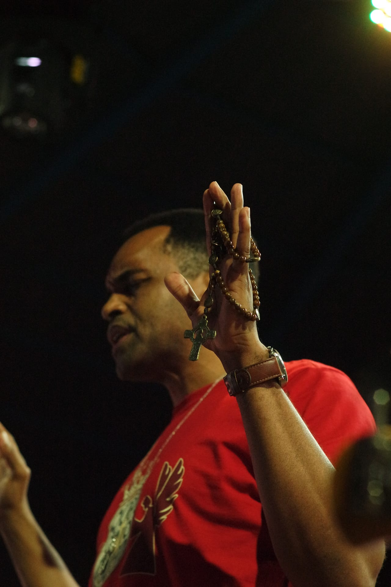
Deus Filho
A cruz.
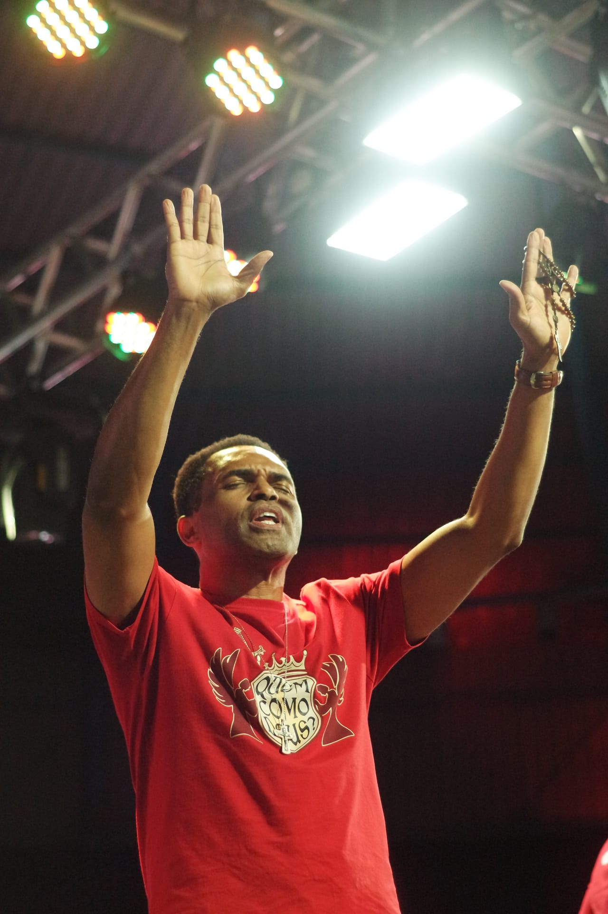
Espírito Santo
A chama.


Noite Oracional
Quem Como Deus
Uma noite inteira de oração com os arcanjos Miguel, Gabriel e Rafael.
Conheça
Congresso SETA
Seguir a Trilha do Amor: o maior congresso católico da região.
ConheçaPróximas datas
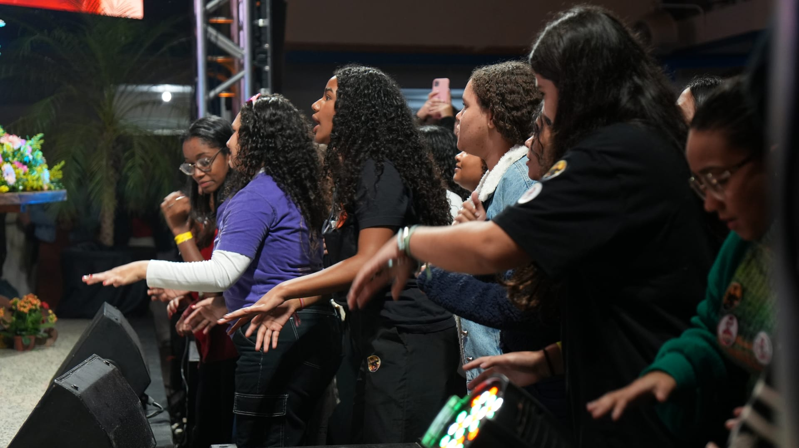
Onde estamos
Ver o mapa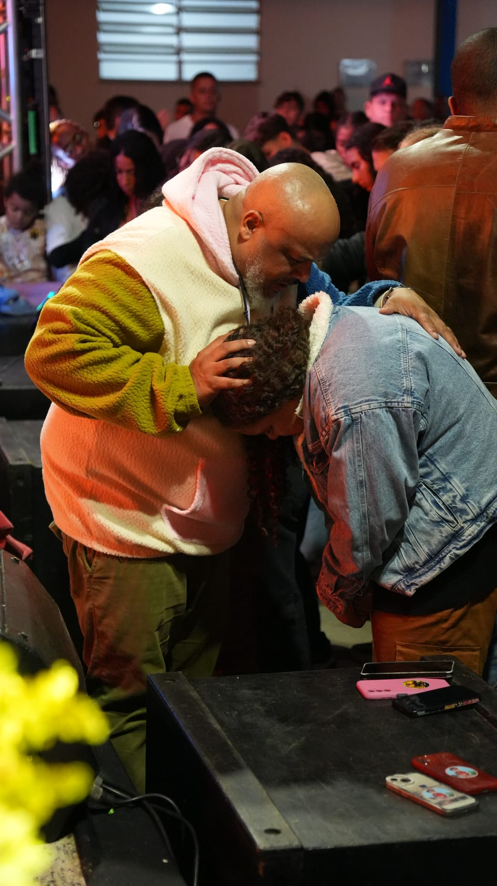